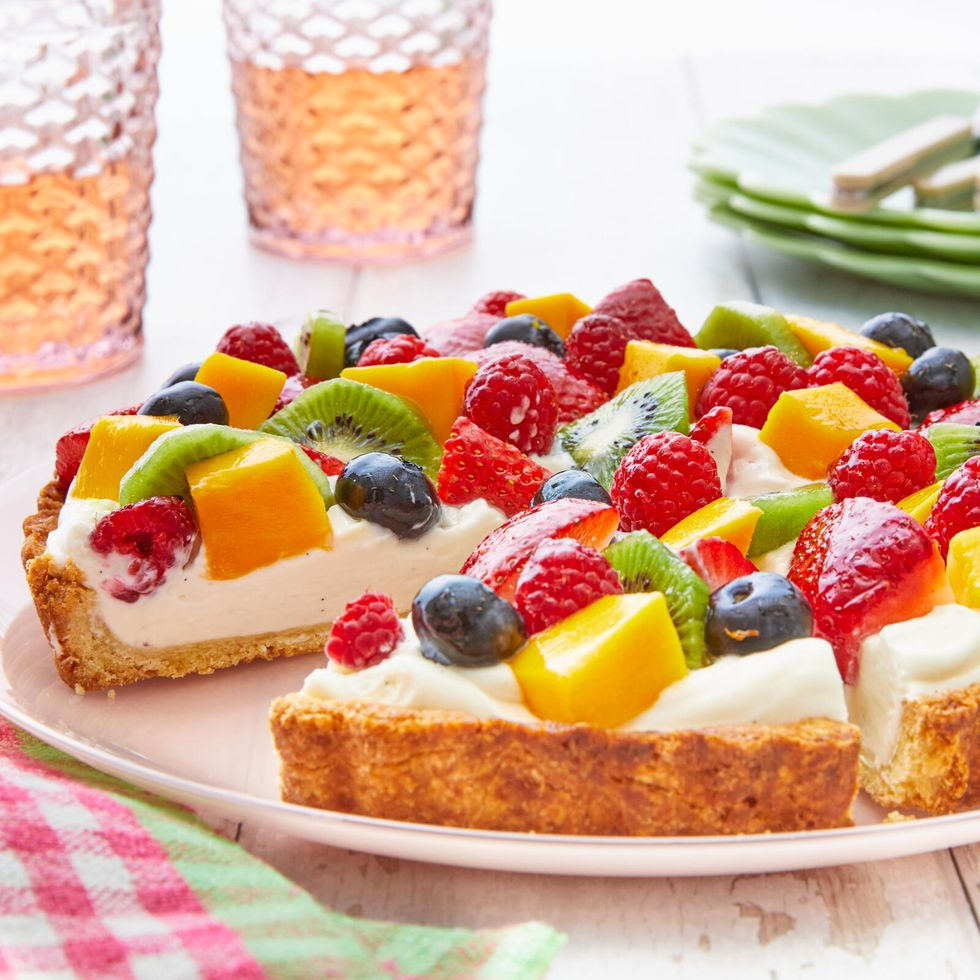

Fruit Tart Recipe

Description
This easy fruit tart is the Goldilocks of summer desserts: it's easier than making a classic
summer pie, but fancier than a down-home fruit cobbler. It looks dramatic, elegant, and downright
impressive, but it's actually simple to make. Sounds just right, right?
When it comes to the gorgeous fruit topping on this fruit tart, the sky's the limit! This version uses a
colorful mix of strawberries, blueberries, kiwi, and mango, but the tart would be just as delicious with
say, all raspberries, or a mix of blackberries and blueberries, or a fan of mango and papaya spears. Just
be sure the fruit is properly peeled, hulled, and pitted—basically, just make sure any tough bits are well
out of the way so that every bite is bursting with unbridled deliciousness.
Ingredients
- 8 oz. cream cheese, softened
- 1/3 c. sour cream
- 1/2 c. powdered sugar
- 2 tsp. vanilla bean paste or vanilla extract
- Pinch of Salt
- 1/3 cup heavy cream
Steps
- For the crust: Whisk together the flour, sugar, and salt in a large bowl. With a pastry cutter or your
fingers, gradually work the butter into the flour until pea-sized pieces form. Stir together the egg yolk
and water, then stir into the flour mixture using a fork in a small bowl. Stir, then knead the dough together
until it is no longer crumbly and holds together when pinched with your fingers. Form it into a disc and wrap
it tightly with plastic wrap. Refrigerate for at least 1 hour or up to 3 days.
- Roll the dough into a 11-inch circle on a lightly floured surface. Transfer the crust to a 9-inch round fluted
tart pan with a removable bottom. Press the crust into the pan and trim the edges right at the top of the tart
pan sides. (Do not worry ff the crust cracks! Patch it up with the dough pieces that were trimmed from the edges).
Prick the bottom of the crust all over with a fork. Place the crust on a dinner plate, then in the freezer for 30 minutes.
- During the last 20 minutes of chilling, preheat the oven to 400˚. Prick the crust all over with a fork. Bake for 12 to 14 minutes,
until the crust is golden brown. Transfer to a wire rack and cool to room temperature.
- For the filling: Beat the cream cheese, sour cream, powdered sugar, vanilla bean paste, and salt in the bowl of an electric mixer
fitted with a whisk attachment on medium until smooth and creamy, 2 to 3 minutes. Gradually pour in the heavy cream with the mixer
running on medium-low and beat until the mixture is light and fluffy, about 30 seconds. Pour the cream cheese mixture into the crust
and spread into an even layer.